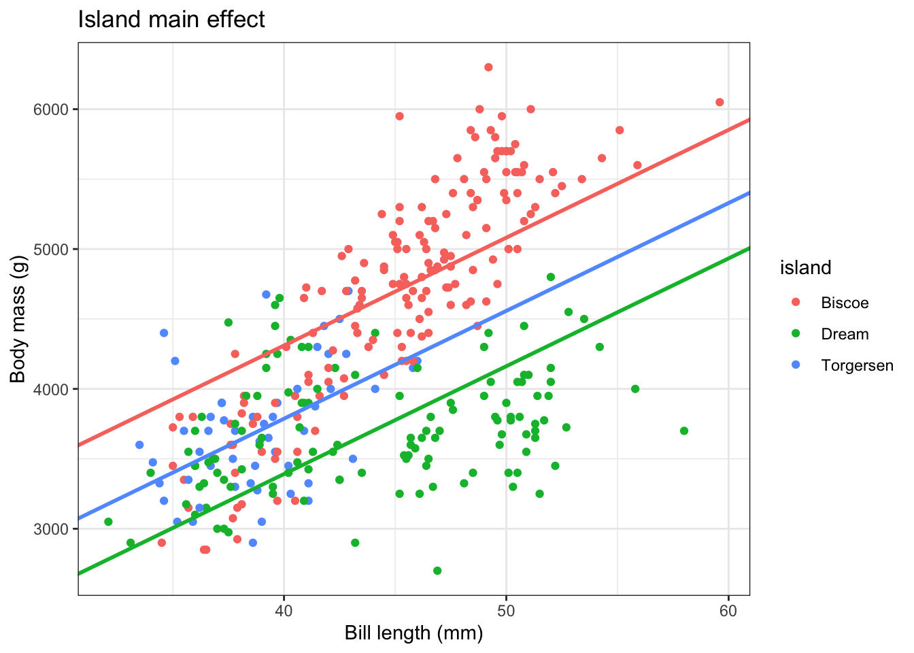
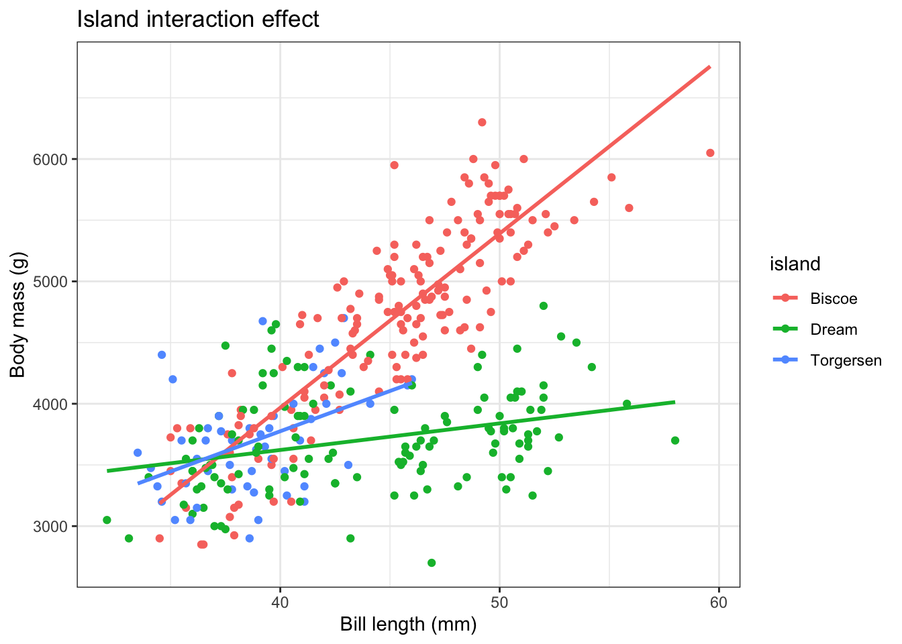

library(tidyverse)
library(tidymodels)
library(palmerpenguins)Linear regression III
STA 101
Bulletin
- Lab 3 due tonight
- Looking towards next week, please fill out this optional form to request group members (from your lab) to work on the projects with.
- Exam 1 released tonight and due Monday
- no TA office hours Friday/Monday
- ask questions early
Warm-up
Check you understanding! Answer the following…
To “fit” a linear model means…[fill in the blank]
Is \(y = \beta_0 + \beta_1 \log(x_1)+ \beta_2 x_2^2 + \epsilon\) a linear model? Why or why not?
Today
By the end of today you will…
- fit and interpret models with categorical predictors
- fit and interpret models with interactive effects
Getting started
Download this application exercise by pasting the code below into your console (bottom left of screen)
download.file("https://sta101-fa22.netlify.app/static/appex/ae8.qmd",
destfile = "ae8.qmd")Load packages and data
Today we will return to our Palmer penguins data set
data(penguins)Use ?penguins or click here for more info.
Notes
Main effects
Up until now, we’ve seen models that look like this:
\[ y = \beta_0 + \beta_1 x_1 + \beta_2 x_2 + \ldots + \epsilon \]
Here’s an example:
\(y\): body mass (g)
\(x_1\): bill length (mm)
\(x_2\): 1 if island Dream, 0 otherwise
\(x_3\): 1 if island Torgersen, 0 otherwise
\[ y = \beta_0 + {\beta_1} x_1 + {\beta_2} x_2 + {\beta_3} x_3 + \epsilon \]
Notice that
We have a categorical predictor
islandthat takes three values: Dream, Torgersen, and Biscoe.Despite taking three values, there are only two island variables in the model. One for
Dreamand one forTorgersen. Biscoe island is considered the default. This always occurs when we have a categorical variable – one category is considered the default.Bill length only impacts body mass via the term \(\beta_1 x_1\).
\(x_2\) and \(x_3\) can be thought of as turning on or off a constant.
Let’s visualize the main effects model below.

We can fit the “main effects” model above with our standard procedure:
main_fit = linear_reg() %>%
set_engine("lm") %>%
fit(body_mass_g ~ bill_length_mm + island, data = penguins)
main_fit %>%
tidy()# A tibble: 4 × 5
term estimate std.error statistic p.value
<chr> <dbl> <dbl> <dbl> <dbl>
1 (Intercept) 1226. 243. 5.04 7.58e- 7
2 bill_length_mm 77.1 5.31 14.5 1.66e-37
3 islandDream -919. 58.6 -15.7 5.15e-42
4 islandTorgersen -523. 85.5 -6.12 2.64e- 9If we want to know how bill length relates to body mass for penguins on island Biscoe, we plug in \(0\) for \(x_2\) and \(x_3\) and write the resulting model. If we repeat as appropriate for each island, the result is 3 separate fitted models:
Biscoe:
\[ \hat{y} = 1225.8 + 77.1 x_1 \]
Dream:
\[ \hat{y} = 1225.8 + 77.1 x_1 - 919.1 \]
Torgersen:
\[ \hat{y} = 1225.8 + 77.1 x_1 -523.3 \]
Notice that in each case, the slope associated with bill length (\(x_1\)) is the same.
Interaction effects
Interaction effect models contain products of predictors, e.g.
\[ y = {\beta_0} + {\beta_1} x_1 + {\beta_2} x_2 + {\beta_3} x_3 + {\beta_4} x_1 x_2 + {\beta_5} x_1 x_3 + \epsilon \]
Here we have an interaction between bill length and island (\(\beta_4 x_1 x_2\) and \(\beta_5 x_1 x_3\)).
Take-away idea: \(x_1\) is related to \(y\) but the relationship changes depending on \(x_2\) and \(x_3\).
The simplest scenario is one of “group membership”. In other words, knowing the group your measurement belongs to affects the relationship between \(x_1\) and \(y\).
Here, we see bill length (\(x_1\)) show up multiple times in our linear model paired with islands. In other words, the relationship between bill length and body mass depends on the island a penguin is from.
We fit this interaction model using the code below:
interaction_fit = linear_reg() %>%
set_engine("lm") %>%
fit(body_mass_g ~ bill_length_mm * island, data = penguins)
interaction_fit %>%
tidy()# A tibble: 6 × 5
term estimate std.error statistic p.value
<chr> <dbl> <dbl> <dbl> <dbl>
1 (Intercept) -1726. 292. -5.91 8.43e- 9
2 bill_length_mm 142. 6.42 22.2 9.14e-68
3 islandDream 4479. 395. 11.3 2.03e-25
4 islandTorgersen 2871. 778. 3.69 2.60e- 4
5 bill_length_mm:islandDream -121. 8.77 -13.8 1.93e-34
6 bill_length_mm:islandTorgersen -76.6 19.5 -3.92 1.07e- 4
Interpreting interactions can be difficult, especially without writing things down. To make it easier, we will compare the implied linear models:
Plug in 0 for islandDream (\(x_2\)) and 0 for islandTorgersen (\(x_3\)) to get the linear model for islandBiscoe penguins
Plug in 1 for islandDream (\(x_2\)) and 0 for islandTorgersen (\(x_3\)) to get the linear model for islandDream penguins
Plug in 0 for islandDream (\(x_2\)) and 1 for islandTorgersen (\(x_3\)) to get the linear model for islandTorgersen penguins
- Biscoe fitted model:
\[ \hat{y} = -1726.0+ 142.3 x_1 \]
- Dream fitted model:
\[ \hat{y} = -1726.0 + 142.3 x_1 + 4478.7 -120.6 x_1 \]
Combine terms:
\[ \hat{y} = 2752.7 + 21.7 x_1 \]
Exercise 1
Write out the fitted model for Torgersen island below.
- Torgersen model: \[ \hat{y} = [\text{write here}] \]
Interpreting
Now we can interpret the interaction model by comparing bill length slopes between islands.
- For a unit increase in bill length of a penguin from the island Dream, how much do we expect the body mass to increase?
Exercise 2
- You measured the bill length of a penguin from island Biscoe and a penguin from island Torgersen a year ago. You re-measure them today and find the bill length of each one grew by exactly 2 mm. How much mass do you expect each penguin to have gained?
Exercise 3
Are the intercepts meaningful?
Exercise 4
Is the relationship between Body mass (g) and Bill depth (mm) positive or negative? Create a convincing argument from the data.
Exercise 5
Build a linear model of body mass using bill depth and one other predictor of your choosing (hint: see previous exercise!)
Write out a linear model with both predictors and fit the model.
Fit the linear model
Do you prefer this model to the interaction effects model from a previous exercise? Why?